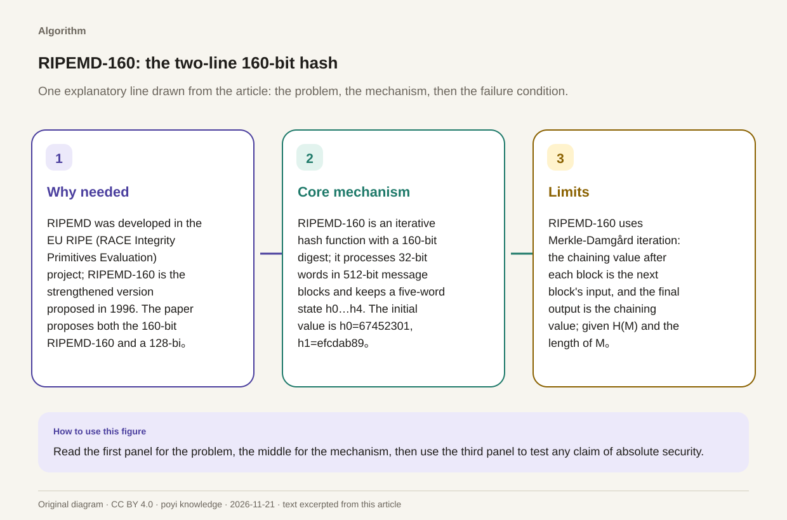
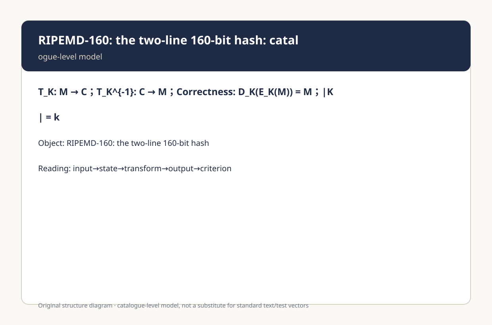

Principles
Algorithm: RIPEMD-160 (RIPEMD-160 散列). RIPEMD-160 is an iterative hash function with a 160-bit digest; it processes 32-bit words in 512-bit message blocks and keeps a five-word state h0…h4. The initial value is h0=67452301, h1=efcdab89, h2=98badcfe, h3=10325476 and h4=c3d2e1f0. Padding is identical to MD4: append 0x80, zero-pad until the length is congruent to 448 modulo 512, and append the 64-bit little-endian message length. For "abc", the padded block is 61 62 63 80 followed by 52 00 bytes and the 8-byte length 18 00 00 00 00 00 00 00; read little-endian, X[0]=0x80636261, X[14]=0x00000018 and X[15]=0. Each message block goes through two parallel 80-step lines; each line has five 16-step rounds with different Boolean functions and constants. The five rounds use:
- f1 = x xor y xor z
- f2 = (x and y) or (not x and z)
- f3 = (x or not y) xor z
- f4 = (x and z) or (y and not z)
- f5 = x xor (y or not z)
The left-line constants are 00000000, 5a827999, 6ed9eba1, 8f1bbcdc and a953fd4e; the right-line constants are 50a28be6, 5c4dd124, 6d703ef3, 7a6d76e9 and 00000000. The two lines use different message-word orders r and r' and different left-rotation amounts s and s'; this is the main structural difference from the single-line MD4/SHA-1 design. Each step computes T = ROTL(A + f(B,C,D) + X[r(j)] + K(j), s(j)) + E, then A←E, E←D, D←ROTL10(C), C←B and B←T; the right line runs the same shape with f(79−j), r', s' and K'. Every line's register update includes D←ROTL10(C): C is rotated left by 10 to become the new D. After 80 steps the two lines' registers are cross-added to the incoming chaining value: h0←h1+C+D', h1←h2+D+E', h2←h3+E+A', h3←h4+A+B' and h4←h0+B+C'. The final digest is the 160-bit little-endian byte string of h0…h4.

Why it matters
RIPEMD was developed in the EU RIPE (RACE Integrity Primitives Evaluation) project; RIPEMD-160 is the strengthened version proposed in 1996. The paper proposes both the 160-bit RIPEMD-160 and a 128-bit RIPEMD-128 plug-in substitute for RIPEMD; the 160-bit design aims to transfer the confidence built up with RIPEMD to the new algorithm.
The two lines use the same five functions in opposite order (the right line uses f(79−j)), with different constants, message orders and rotation amounts; an attacker must control both lines to build a collision, raising the difficulty of differential attacks. The design goal is to make the two lines as different as possible, not to run them independently.
A 160-bit digest gives an ideal collision cost of about 2^80 and preimage/second-preimage costs of about 2^160; the paper presents the 160-bit result as the security strengthening over 128-bit RIPEMD. The paper's 90 MHz Pentium measurements show RIPEMD-160 is about 15% slower than SHA-1, about half RIPEMD's speed and about a quarter of MD4's; the security increase costs about a factor of two in performance.
The paper aims to increase the security margin but gives no mathematical security proof; the authors invite further security analysis of RIPEMD-160 in the conclusion.
Applications
The paper lists digital fingerprinting, message authentication, key derivation and password protection as uses; these rely on preimage, second-preimage or collision resistance. Message authentication (MAC) is one of them, but the hash itself is not a MAC, which requires a keyed construction; key derivation and password protection rely on output unpredictability and preimage resistance.
RIPEMD-160 is a 160-bit hash; the paper positions it as the strengthened RIPEMD and also offers 128-bit RIPEMD-128 as the original RIPEMD's replacement. Whether a protocol adopts it depends on that protocol's own specification.

Limits & attacks
RIPEMD-160 uses Merkle-Damgård iteration: the chaining value after each block is the next block's input, and the final output is the chaining value; given H(M) and the length of M, one can length-extend to H(M || pad(M) || X), which is not a collision. This batch demonstrates it: given the digest of RIPEMD-160(abc) and the 64-byte padded length, it computes RIPEMD-160(abc || pad || extra) = 1f35150185a2c3cfc80d435934579261c99da3e0 without the original message.
The birthday collision bound for a 160-bit digest is about 2^80; this is a generic-attack bound, not a specific cryptanalytic result against RIPEMD-160. The 2004 Wang, Feng, Lai and Yu ePrint 2004/199 lists MD4, MD5, HAVAL-128 and RIPEMD in its title; the title says RIPEMD, not RIPEMD-160. The two are not the same algorithm, and the original RIPEMD results cannot be carried over directly to RIPEMD-160.
The two-line structure also has a performance cost: RIPEMD-160 is about 15% slower than SHA-1 and about half RIPEMD's speed; if an application already uses RIPEMD and needs a 128-bit digest, RIPEMD-128 is the paper's 128-bit substitute. Algorithm choice should weigh the protocol requirement, output length and security margin.
History
- Before 1996: RIPEMD is developed in the EU RIPE project as an MD4-style hash function. - 1996: Dobbertin, Bosselaers and Preneel publish RIPEMD-160 and RIPEMD-128 at FSE 1996 (LNCS 1039, pp. 71-82). - 2004: Wang, Feng, Lai and Yu's ePrint 2004/199 lists MD4, MD5, HAVAL-128 and RIPEMD in its title; the title says RIPEMD, not RIPEMD-160.
Worked example & verification
Worked example
Take one published or standard test vector, record the input, the ordered steps and the byte-exact output, then compare with an independent implementation. Where no citable numeric vector is available, the entry records only structural steps and does not invent an output.
References
- Wikipedia search entry for RIPEMD-160 散列. https://zh.wikipedia.org/w/index.php?search=RIPEMD-160%20%E6%95%A3%E5%88%97
- Handbook of Applied Cryptography (Menezes, van Oorschot, Vanstone). https://www.cacr.math.uwaterloo.ca/hac/